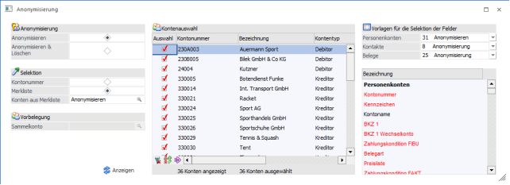

Im Fenster "Anonymisierung", welches über den Menüpunkt…
1 WinLine START
1 Abschluss
1 Konten
1 Anonymisierung
… aufgerufen wird, können personenbezogen Daten per Vorlagedefinition anonymisiert werden bzw. alternativ Personenkonten gelöscht werden.
Hinweis
Anonymisierte personenbezogene Daten bzw. gelöschte Personenkonten können nicht mehr rekonstruiert werden. Bei der Anonymisierung wird geprüft, ob es für das betroffene Konto offene Fakturen oder Buchungen in einem Buchungsstapel gibt. Wenn das der Fall ist, wird beim ersten betroffenen Konto gefragt, ob trotzdem anonymisiert werden soll. Wird die Frage mit "Ja" beantwortet, läuft die Anonymisierung durch. Bei "Nein" wird die Anonymisierung abgebrochen und in jeder betroffenen Zeile wird eine entsprechende Info angezeigt. Diese Prüfung kann auch im Fenster Letzte Verwendung für die gewünschte Anzahl von Jahren vorgenommen werden und anschließend können die so geprüften Konten in eine Merkliste gespeichert werden bzw. können die Konten direkt in dieses Fenster übernommen werden.
In diesem Fenster werden zwei verschiedene Anonymisierungsansätze unterstützt, und zwar anhand der zwei Optionen "Anonymisierung" und "Anonymisierung & Löschen".

Im Fenster "Konten umnummerieren", welches über den Menüpunkt…
1 WinLine START
1 Abschluss
1 Konten
1 Umnummerieren
… aufgerufen wird, können Sachkonten, Personenkonten und Interessentenkonten umnummeriert werden.
Alle drei Verfahren werden in den folgenden Subkapiteln veranschaulicht.